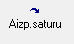

Savstarpējo norēķinu salīdzināšanas akts¶
Savstarpējo norēķinu salīdzināšanas akti tiek veidoti, lai salīdzinātu savstarpējos atlikumus. Savstarpējo norēķinu salīdzināšanas akta saturs tiek aizpildīts no pirmdokumentiem (dokuments, datums, parāda summa) vai no grāmatojuma (virsgrāmatas).
Savstarpējo norēķinu salīdzināšanas akti ir pieejami no izvēlnes>Norēķini>Dokumenti>Savstarpējo norēķinusalīdzināšanas akti.
Jauna savstarpējo norēķinu salīdzināšanas akta pievienošana¶
Norēķini>Dokumenti>Savstarpējo norēķinu salīdzināšanas akti, un rīku
joslā jānospiež poga  , vai jāizvēlas
Norēķini>Jauns>Savstarpējo norēķinu salīdzināšanas akts, tiek atvērts
logs:
, vai jāizvēlas
Norēķini>Jauns>Savstarpējo norēķinu salīdzināšanas akts, tiek atvērts
logs:
{kind=link}
Salīdzināšanas akta saturs tiek aizpildīts balstoties uz akta virsraksta iestādīto parametru vērtībām:
{kind=link}
Salīdzināšanas datums, Valūta – ja valūta nav izvēlēta, tad tiek parādīti visu valūtu dokumenti, Partneris, Konts,
Dokumenta veids – ja ir izvēlēts IEP/Pārd.dok. – iepirkuma un pārdošanas dokumenti, IEP dok. - iepirkuma dokumenti, Pārdošanas dok. – pārdošanas dokumenti, [Grāmatojumi] – grāmatojuma (virsgrāmatas) konta summa.
Savstarpējo norēķinu salīdzināšanas aktu saturu aizpilda nospiežot pogu 
{kind=link}
Saturs tiek aizpildīts ar atskaites „Norēķinu atlikumu salīdzināšana” rezultāta datiem.
Savstarpējo norēķinu salīdzināšanas aktu var izveidot ar atskaites „Norēķinu atlikumu salīdzināšana” funkcijas palīdzību. Šī atskaite ir 3 dažādu atskaišu kopsavilkums Norēķini - „Neapmaksātie pārdošanas dokumenti” , Norēķini - „Neapmaksātie iepirkuma dokumenti” un Virsgrāmata – „Konta atlikumi” . Atskaites kolonnā „Dok.DB” tiek parādīta atskaites „Neapmaksātie pārdošanas dokumenti” parāda summa, kolonnā „Dok.CR.” atskaites „Neapmaksātie iepirkuma dokumenti” parāda summa. Savstarpējo norēķinu salīdzināšanas aktu var izveidot, ja atskaite ir izveidota par vienu partneri un vienu kontu un atskaites kolonnu „Starp.DB” un „Starp.CR” vērtības ir 0,00. Kolonnās ir dokumentu un konta debeta vai kredīta starpība.
Lai dokumentu drukātu, rīku joslā jānospiež poga
 un jāizvēlas attiecīgā izdrukas forma.
un jāizvēlas attiecīgā izdrukas forma.